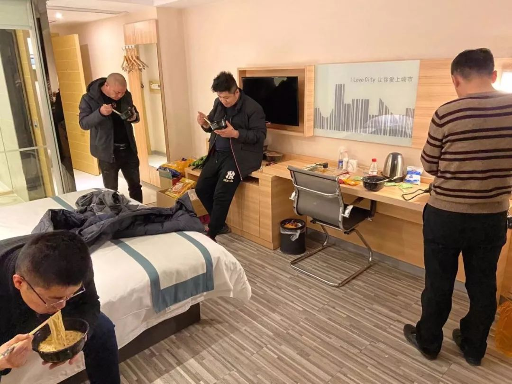
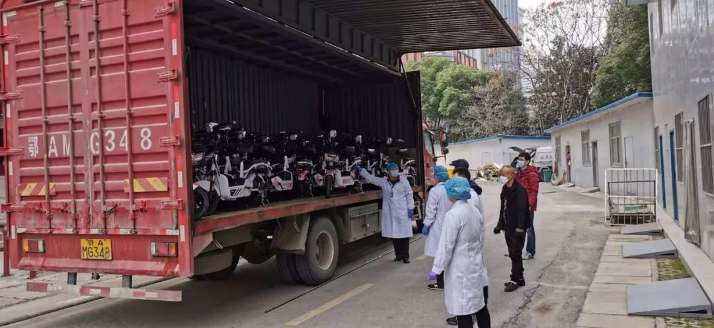
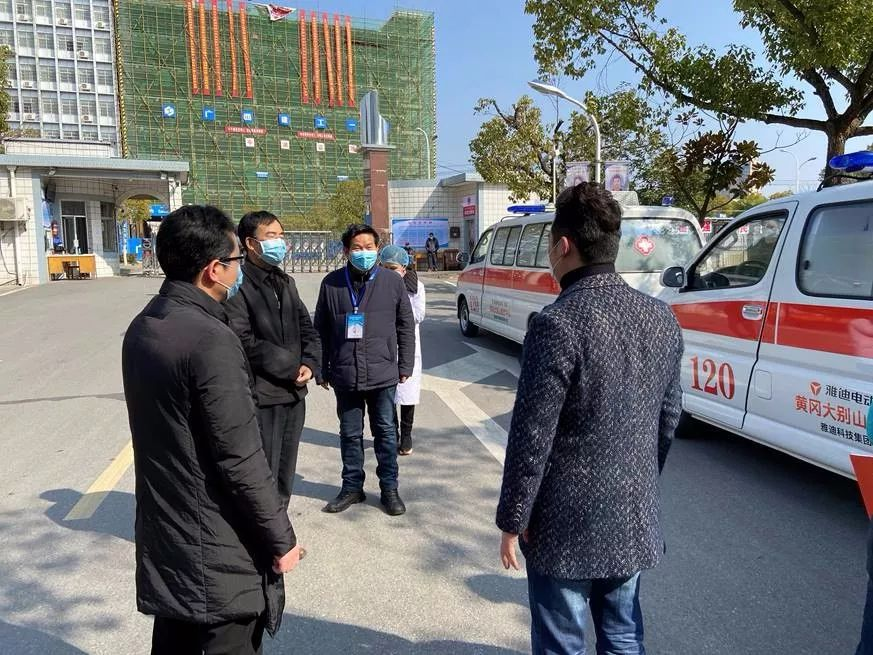
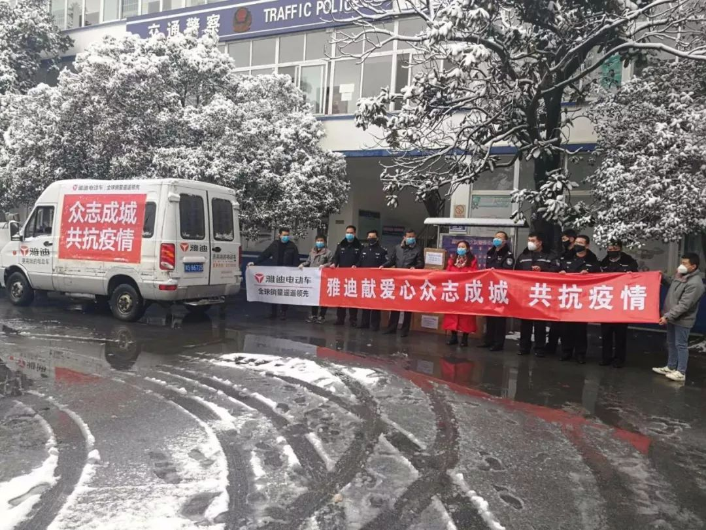

封城10日，武汉人的自救行动
原文链接 备份链接 数据来源：腾讯新冠肺炎疫情实时追踪 截至2月3日早上7时， 全国新冠肺炎确诊个案16615例， 武汉确诊个案5142例。 根据1月31日湖北省疫情新闻发布会， 截至30日24时， 武汉地区共有6万余名医务工作者参与救 …
“武汉其实不是缺口罩，缺的是可以在临床使用的独立包装的高标准的口罩，这也是我们逐个医院的去打电话排查需求和标准的原因，也是我们为什么要去一线的原因，我们这些人从上到下都有一股军人的家国情怀和强烈的使命感”。
在短短20多分钟的电话采访中，“使命感”这三个字被张博文提及了9次。
张博文出生于1996年，是雅迪在疫区前线援助的五名成员中年龄最小的一位，原本只是雅迪终端推广部门的普通一员，在这次的抗击新冠肺炎期间，却成为了一名逆行的“综合体战士”。他集司机、向导、搬运、安装、清点等职责于一身，与四名同事“躬身入局”，深入武汉、黄冈等疫情重灾区，为当地医疗单位和社会管理单位捐赠并发放驰援物资。
这次采访是在张博文等五名成员前往武汉、黄冈援助返程无锡后，在隔离的定点酒店接受的电话采访。张博文等五人，还要在酒店隔离满14天，才能和家人见面。
在沟通中，这个96年的小伙子，通过电话传递出来的真诚与大义，令人久久挥之不去。“国泰民安、早克时艰、天下承平”，这12个字是张博文在采访的最后，代表所有雅迪人献给中国母亲的一句话。
以下为张博文采访实录：
问：从黄冈援助物资回来后，你们现在是自我隔离了吗？
答：是的，今天是隔离的第3天，当天从高速下来后就直接进了隔离酒店。这个酒店是无锡安镇街道的集中隔离点，处于封闭的状态，我们不能走出房间门。说实话，我已经有点待不住了，我是一个从小待不住的人，高中是在内蒙、大学是在江西，我平时的工作性质是在全国各地跑，基本上在封闭空间内是待不住的。
问：当时是毅然决然地决定和同事们一起前往黄冈和武汉么？你有没有犹豫过？
答：第一，我是96年的，这次的疫情对我来说就像是参与了一个历史性的事件，很有成就感的；第二是因为我看新闻说免疫力强的人可以自愈，我平时就有锻炼的习惯，我感觉身体还可以。坦白讲，家人不太支持。一方面，他们一年到头见不了我几次；另一方面，武汉是重灾区，大多数人避而远之，怕我也有个万一。


问：我关注到在这次疫情援助中援助的企业很多，但很少会派出工作人员直接参与，雅迪是怎么想的？
答：现在回头想想，要想真正的为疫情做一些事情，还是要深入到一线中，切实了解他们的所需，亲身体会他们的工作。
比如，所有人都说湖北医护物资紧缺，但是到底紧缺到什么地步？我们到武汉的第一天是带着全套防护去的武汉协和医院，结果协和医院的医生看到我们戴着护目镜，他们特别羡慕。
再比如，听说武汉那边的医生每天工作10个小时以上，是无法感受到他们有多辛苦的。他们已经连续一个多月，每天工作超过12小时，甚至14小时以上，并且这种高强度、高压力、高危险的工作环境和状态，可能是我们普通人一辈子都不会经历的，那是生死时速。
此外，雅迪做的是对口、精准援助。前期同事们都是一家一家医院打电话去询问物资需求，通过全球采购医护物资，后期如果我们不“送货上门”，也对不起他们的辛苦排查和医院的翘首以待。
问：除了医护物资以外，雅迪还捐了10,000台新国标电动车，这样的捐赠其实很少见，出于何种考虑？
答：确实如此。雅迪向湖北捐赠了两类物资，一类是医护物资，像医用的口罩、手套、脚套、防护服、护目镜、酒精、专业的移动式医用空气消毒器、救护车等，另外就是1万辆符合新国标的两轮电动车和配套的保暖骑行手套。
第一类医护物资，是救命用的。我当时去武汉市中心医院，医生们看到我们的物资，直接跟我们说：“你们捐的口罩是最好的。”我们当时给他们送去了63,800个韩国KF94标准的独立包装的医用口罩。
这种高标准的医用口罩在医院经过专业设备消毒后可以重复使用，他们也只给最前线的临床战士们使用，非临床是一种非独立包装的防护口罩，只能用于其他科室，或者社区、街道、警察等进行社会管理和疫情防控的人们。所以，他们其实不是缺口罩，而是缺可以在临床使用的独立包装的高标准的口罩，捐赠物资要能用在刀刃上。

第二类新国标电动自行车和保暖手套，则是为了帮助医护人员和社会管理人员解决出行问题。我有朋友在武汉，没有进行交通管制之前，他们有很多志愿者可以接送医护人员们上下班，从那个时候开始，武汉的运力就已经严重不足。后来全面管制后，医护人员上下班时没有交通工具，有很多是自己走路或者骑车上下班，特别辛苦，即便是有私家车的，在新冠肺炎的传染性面前，汽车并不是安全的选择。

电动自行车不封闭，做好防护后相对来说是一个比较安全的出行方式，而且非常方便。我们在捐赠的时候也考虑到电池的续航能力，挑选的系列产品基本上能保证医护人员的出行。并且雅迪考虑到武汉会存在车辆安装人力短缺的问题，所以有一部分电动车电池都是安装好的，整车运送过去，确保拿到车就可以使用。
问：10000辆电动车不是一个小数目，派发过程中有什么难点吗？
答：一辆车安装一个电池大约需要20分钟左右的时间，10,000辆车花费的安装时间就很长了，这个工作量非常大。而湖北一是不能人员聚集，二是人力非常短缺，也找不到那么多的人。
包括经销商、业务人员，还有我们自己都上阵了。不仅要安装电池，还有负责装卸，尤其是安装电池后，50公斤左右的车要抬到货车上，不是个轻松的活。青壮年也没办法一连干好几天，我们业务来帮忙的同事腰都出问题了。


电动车的装卸车是需要技巧的，装卸50公斤左右的电动车，需要两名或者三名志愿者。我们可以每人抬一辆，人效也会比较高。再比如安装一个电池，熟练的师傅也就5~10分钟，慢的话一般来说20分钟也能安装好。但是如果志愿者来操作，时间更长。所以为了节省人力和提高效率，我们都尽可能的多做一些事情。
一线同事真的挺不容易，我们有一个负责物资中转的同事，他跟我说：“你说，有多少东西是咱们以前压根没干过的？”没干过，就边学边干，硬着头皮也要做，我们都是“综合体战士”。我觉得其实这一次战疫过程中，所有人都是“综合体战士”。
问：听说你们还去了黄冈，进到黄冈以后，有什么感受？
答：因为武汉是新冠肺炎的中心区，当时大家的关注度也都在武汉。但是像黄冈、孝感这样的城市，他们的物资紧缺程度，远远要超过武汉的定点医院。因为武汉的关注度非常的高，全国各地甚至全球资源都在向武汉集结，总体来讲，他们的物资已经非常多了，反倒是黄冈、孝感，他们的关注度非常低，物资紧缺的程度更胜武汉。并且，黄冈和孝感相对来说经济和医疗都没有武汉发达，面对不断上升的新冠肺炎患者，他们甚至没有能力大批量的自行购买医护物资。

其实我们之前就启动了对黄冈和孝感的支援计划。最早的时候给黄冈送了医用手套，后来我们又陆续向黄冈援助了价值1000多万元的物资，包括医用口罩、护目镜、医用酒精、医用手套等医护物资，还捐赠了6辆救护车以及1000辆新国标电动自行车和配套的保暖手套。
问：我们知道雅迪集团董事长是一名退伍军人，在本次疫情援助中，能否感受到军人精神对援助的影响？
答：首先是董事长作为曾经的军人，他的家国情怀会更加强烈。他有强烈的民族自豪感和保家卫国的使命感。其次，在董事长带领下，我们公司也基本上属于军事化管理，雅迪的执行力也在这样的环境中历练出来。在日常工作中，不管是使命感，还是执行力，董事长对我们的影响都非常深刻，我觉得我们雅迪人“天生”就带有家国情怀和使命感。
在猎猎军旗下，他们的使命感和爱国情，跟我们普通人还是不太一样的。就像有一首歌《假如战争今天爆发》写的那样，那群人“早已枕戈待旦，只待冲锋的号角吹响”。我在武汉和黄冈的现场也看到，在一线的除了党员，就是那些退伍军人，他们只不过是换了一种身份来保家卫国。
包括在我们日常的企业运行过程中，因为我们是一个有使命感的企业，有愿景的企业，每做一件事情，我们所有人的目标都是相同的，所有人都为了这个目标而努力。这可能也是雅迪这个品牌能从一个竞争异常激烈的行业中脱颖而出，成为龙头企业的关键原因。因为使命感会促使我们多做很多事情，并且是勇往无前地去做。

正是有了一大批有着大无畏精神的企业，以及企业家带领的大无畏精神的人们，国家才会更加繁荣昌盛。一个国家一定要有这样的有着大无畏精神的企业和人。
后记：
无私亦无畏。面对家人的不解、面对深入新冠肺炎重灾区的感染风险，以张博文、顾钱伟、钱加伟、陈利民、樊恩奇为代表的五人前线小组，以及一群“天生”带有家国情怀和使命感的雅迪人，仿佛用一件件抗疫物资，为武汉、为湖北、为中国筑起了一道防护墙。
本文仅代表作者观点，不代表平台立场
原文链接 备份链接 数据来源：腾讯新冠肺炎疫情实时追踪 截至2月3日早上7时， 全国新冠肺炎确诊个案16615例， 武汉确诊个案5142例。 根据1月31日湖北省疫情新闻发布会， 截至30日24时， 武汉地区共有6万余名医务工作者参与救 …
原文链接 备份链接 02.02.2020本文字数：1995，阅读时长大约3.5分钟 导读：随着送检加快，黄冈今天确诊病例还将继续大增，但医药物资短缺等客观形势下，防控形势十分严峻。 作者 | 第一财经 陈益刊 紧邻武汉的湖北省黄冈市，新 …
原文链接 备份链接 作者 | 罗松松 编辑 | 张庆宁 出品 | 棱镜·腾讯小满工作室 欢迎下载腾讯新闻APP，阅读更多优质资讯 在1月30日举行的发布会上，卫健委新闻发言人米锋表示，根据当前应对疫情工作需要，运送物资到湖北省的货车司机 …
原文链接 备份链接 记者 | 驳静 董冀宁 实习记者 | 李秀莉 昨天下午，“湖北之声”发布《武汉紧急求援》，指出多家医院物资紧张，可能只够维持3-5天。本刊记者接触到的一线医护人员也反应了同样的情况。“为什么我们显得这么着急呢？病毒肆 …
原文链接 备份链接 新冠肺炎疫情的医疗物资告急，各地纷纷发出求助信息。与此同时，海外华人行动起来在异国采购紧缺物资，却苦于没有渠道运抵国内抗疫一线。一条绿色通道出现，为救援物资架起跨洋的生命运输线。 故事时间：2020年 故事地点：海 …